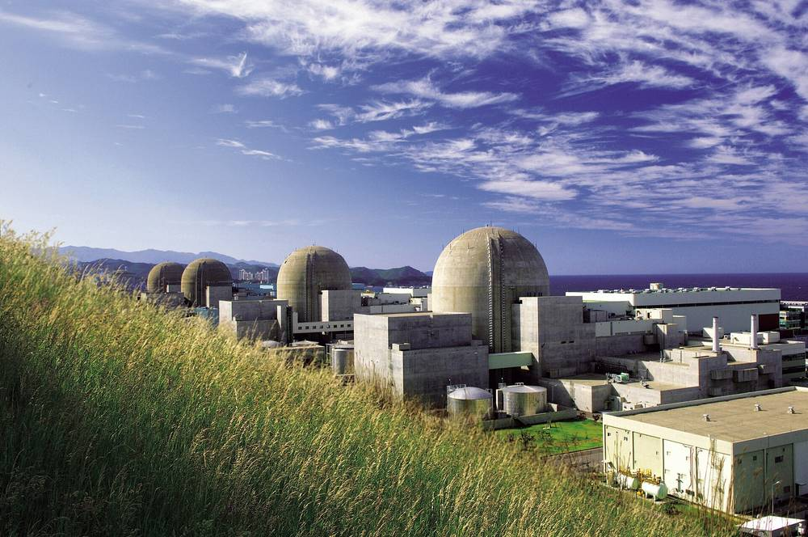

한울원전 지하수 관측정서 삼중수소 리터당 3만 베크렐, 원자력안전위원회 사건조사 착수

취수구 해수는 117베크렐 수준, 제한구역 밖 해수에선 안 나와 / 한수원, 액체 방사성폐기물 배출 배관 손상 추정
원자력안전위원회가 경북 울진 한울원전 취수구 해수에서 삼중수소가 검출되자 한국원자력안전기술원(KINS) 전문가로 꾸린 조사단을 현장에 보내 11월 16일 사건조사에 들어갔다. 발단은 한국수력원자력이 13일 원전 부지 안 지하수 관측정 1곳에서 삼중수소 리터당 3만 베크렐(Bq/L)을 검출해 원안위 지역사무소에 보고한 일로, 한수원 자체 관리기준인 4만 베크렐에 가까운 수치다.
원안위는 13일 누설 가능성이 있는 설비의 작동을 멈추게 하고, 삼중수소가 바깥으로 나갔는지 확인하도록 인근 해수 분석을 요구했다. 한수원은 감마핵종이 검출되지 않았고 다른 관측정과 방사선 감시기에 특이사항이 없다는 점을 들어, 액체 방사성폐기물을 거른 뒤 바다로 내보내는 배관이 손상돼 배출물 일부가 흘러든 것으로 추정했다. 원안위는 조사단을 통해 한수원의 조치와 주변 환경 영향을 점검할 계획이다.
한수원이 16일 원안위에 보고한 해수 분석에서 취수구 지점 농도는 리터당 117베크렐 수준이었고, 원전 제한구역 밖에서 떠 온 해수에서는 삼중수소가 검출되지 않았다.
시민에너지 관점
부지 안 관측정 1곳의 농도가 한수원 자체 관리기준의 4분의 3에 이르렀고, 원인은 아직 한수원의 추정 단계다. 제한구역 밖 해수에서 나오지 않았다는 결과와 별개로, 배관 손상 추정이 확인될 때까지 주민이 직접 볼 수 있는 측정 자료가 꾸준히 공개돼야 불안이 줄어든다. 앞으로의 전원 구성을 다루는 원전 공론화위원회 공개토론회가 11월 25일 열리는 만큼, 발전소 곁에 사는 주민의 안전 정보 접근권과 지역이 직접 소유하는 재생에너지 확대를 함께 논의 테이블에 올려야 한다.
출처: 원자력안전위원회 2026-11-16 보도자료 「한울 원전 취수구 삼중수소 검출 원안위, 조사단 파견해 사건조사 착수」(원자력안전과) 원문 보기
출처: 전력수급기본계획을 위한 원전 공론화위원회·기후에너지환경부 2026-11-16 보도자료 「원전 공론화 누리집 16일 개설… 공개토론회 참석 신청 17일부터」 원문 보기